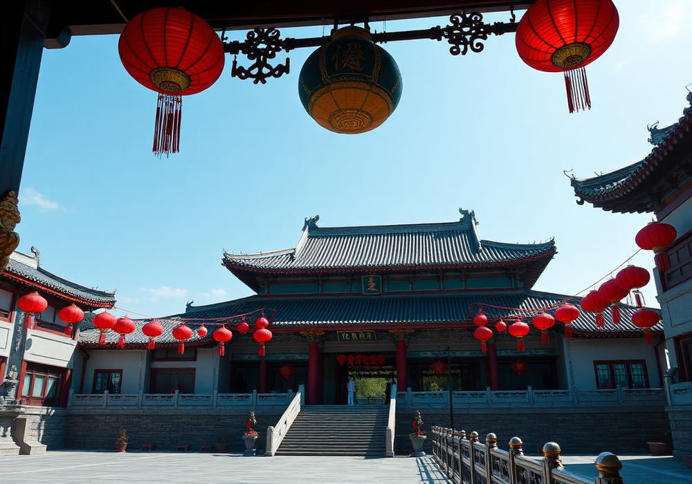

En fansida på svenska om den kinesiske skådespelaren Cheng Lei, gjord av en fan för andra fans.
Hengdian World Studios - filmstaden i Zhejiang
Hengdian är en ort i provinsen Zhejiang i östra Kina och hem för Hengdian World Studios, ett av
världens största inspelningsområden. Många av de kinesiska dramaserier som fans följer spelas in just här.

Illustration av en palatskuliss i filmstadsmiljö. Bilden är AI-genererad.
Historia och bakgrund
Hengdian World Studios anlades i bÖrjan av 1990-talet i den lilla orten Hengdian i Dongyang, Zhejiang.
Bakgrunden var en filminspelning som behÖvde stora historiska miljöer, och i stället för att bygga tillfälliga
kulisser valde man att uppföra permanenta byggnader. Sedan dess har området växt till en hel filmstad med
flera separata inspelningsområden, hotell, verkstäder och tjänster för produktionsbolag.
I dag beskrivs Hengdian ofta som "Kinas Hollywood", men jämförelsen haltar lite: här ligger tyngdpunkten
på själva inspelningsmiljöerna snarare än på studiobolag och distribution. Varje år spelas ett stort antal
tv-serier och långfilmer in i området, och tusentals statister arbetar här. För fans av kinesiskt drama är
Hengdian därför en plats som återkommer om och om igen i bakom-kulisserna-material.
Filmstaden består av flera tematiska områden som representerar olika epoker i Kinas historia. Det finns
kopior av kejserliga palatsmiljöer, gator från Qingdynastin, byggnader i Ming-stil, en Hongkong-gata från
1930-talet och stora tempelområden. Delar av kulisserna är byggda i full skala, vilket gör att kameran kan
röra sig fritt utan att avslöja att miljön är byggd för film.
För produktionerna innebär det stora fördelar. I stället för att resa mellan olika historiska platser i landet
kan ett team spela in palatsscener, marknadsscener och stridsscener inom samma område. Kostymer, rekvisita och
erfarna statister finns på plats. Samtidigt innebär det att många serier delar miljöer, och trogna tittare
känner ofta igen en och samma trappa eller portal från flera olika dramer.
Hengdian är inte bara en arbetsplats för filmteam utan också ett populärt resmål. Stora delar av området
fungerar som nöjespark där besökare kan gå runt i kulisserna, se uppvisningar och ibland titta på pågående
inspelningar på avstånd. Det finns också möjlighet att hyra historiska kostymer och fotografera sig i miljöerna,
något som är mycket populärt bland unga besökare.
Orten ligger i Dongyang i provinsen Zhejiang, ett par timmars resa från Hangzhou. Runt filmstaden har det
växt fram hotell, restauranger och små företag som lever på filmindustrin. För den som reser hit som fan är
det klokt att kolla vilka områden som är öppna för allmänheten, eftersom delar av filmstaden kan vara avstängda
när inspelningar pågår.
Notering: texterna på den här sidan är AI-genererade sammanfattningar baserade på Wikipedia och
granskade av mig.